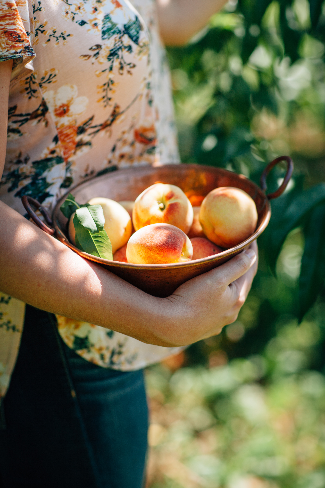

<h1><a href="1.html" target="_blank" title="nectarine">Fruit</a></h1>
<head>
<title>Fruit</title>
<meta charset="utf-8">
</head>
<body>
<ol>
  <li><a href="nectarine.html" target="_blank" title="nectarine">Nectarine</a></li>
  <li><a href="orange.html" target="_blank" title="Orange">Orange</a></li>
  <li><a href="pineapple.html" target="_blank" title="Pineapple">Pineapple</a></li>
</ol>
<p style="margin-top:80px;">
<h2>내가 좋아하는 과일</h2>
내가 제일 좋아하는 과일은 <strong><u>천도복숭아</u></strong>이다.
여름을 싫어하는 내가 여름을 기다리는 이유다.
달기만 한 복숭아와는 다르게 천도복숭아는 시큼달콤하고 여름에 입맛 돋우는 과일이다.
<p style="margin-top:45px;">

<p style="margin-top:45px;">
</body>


<h2>천</h2>
<h3>도</h3>
<h4>복</h4>
<h5>숭</h5>
<h6>아</h6>
<h6>냠냠</h6>
